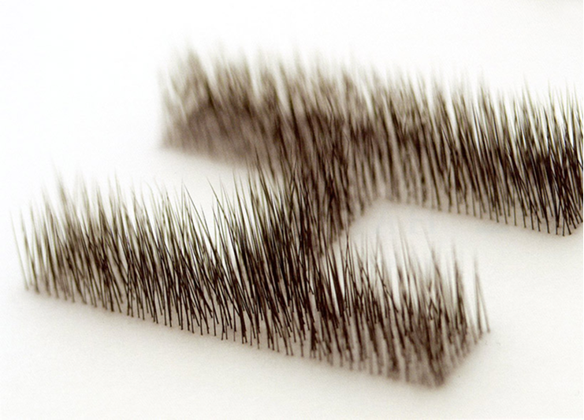
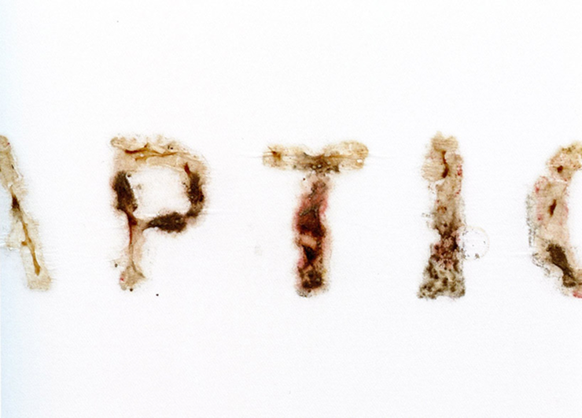
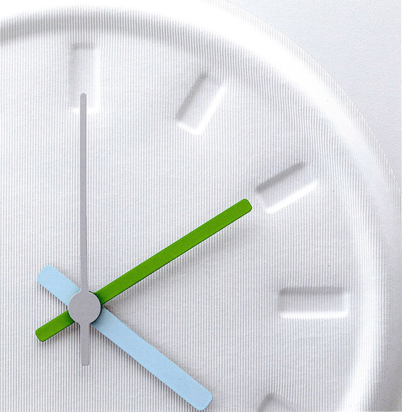
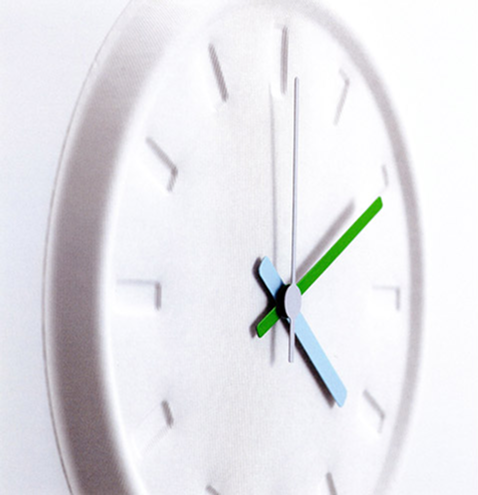
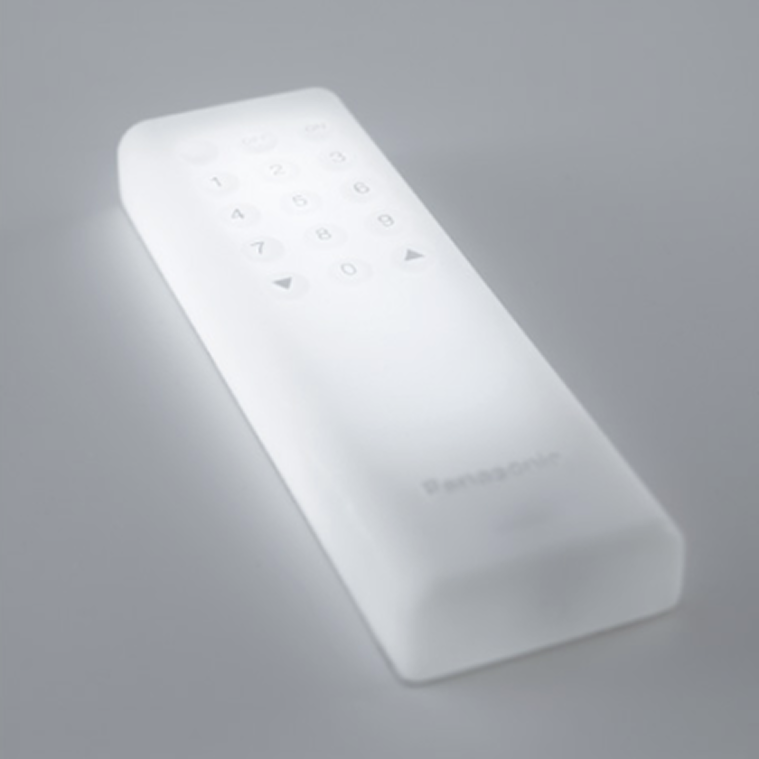
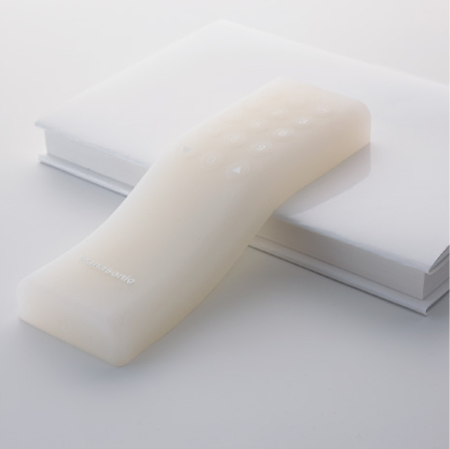

Awakening of the senses


Hara redefines design as something to be felt, not just seen. He emphasizes multisensory experiences, where touch, sound, and space contribute to meaning. His HAPTIC exhibition (2004) explored how design can awaken nonvisual senses.


Haptic is something
that makes your senses crave


While dealing with shape, color, material and texture is one of the more important aspects of design there is one more: it’s not the question of how to create, but how to make someone sense something We might call this creative awakening of the human sensors ‘the design of the senses.